Museion — screenshot del 4 ottobre 2026
Screenshot reali del Browser. I corsi da fonti sono un replay QA esplicito, non una generazione live riuscita. La prova usa un account sintetico e un database separato. Nessuna pubblicazione.
Verifiche e limiti · Accesso, onboarding e dashboard
Corso curato — percorso desktop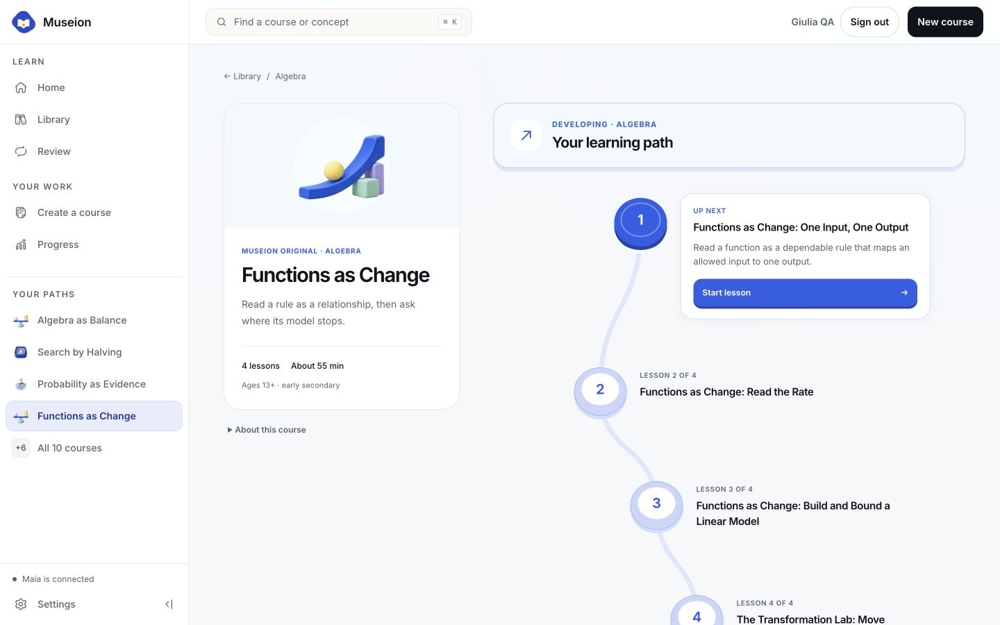
Corso curato — percorso mobile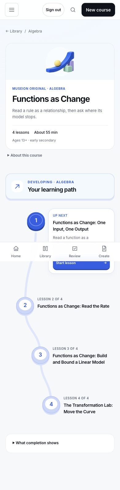
Maia e laboratorio — desktop finale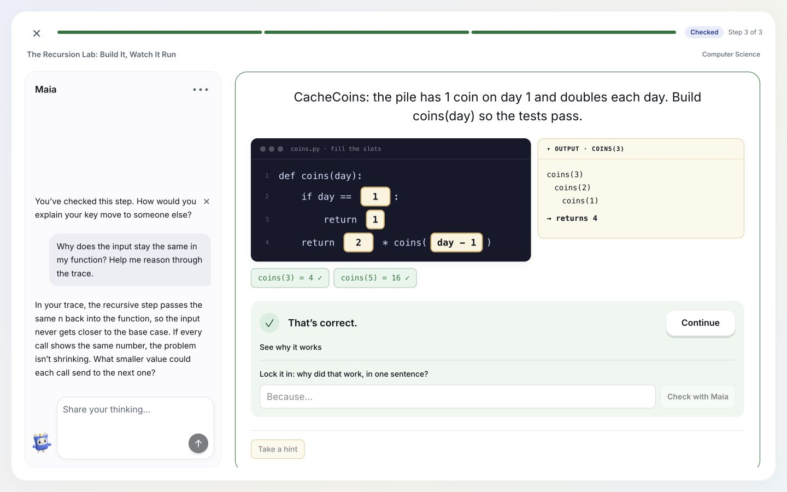
Maia e laboratorio — mobile finale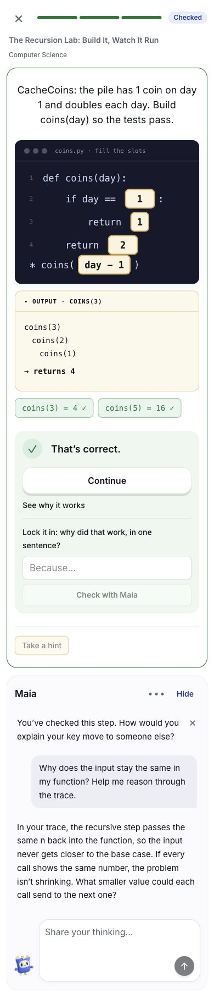
Landing — scena scroll finale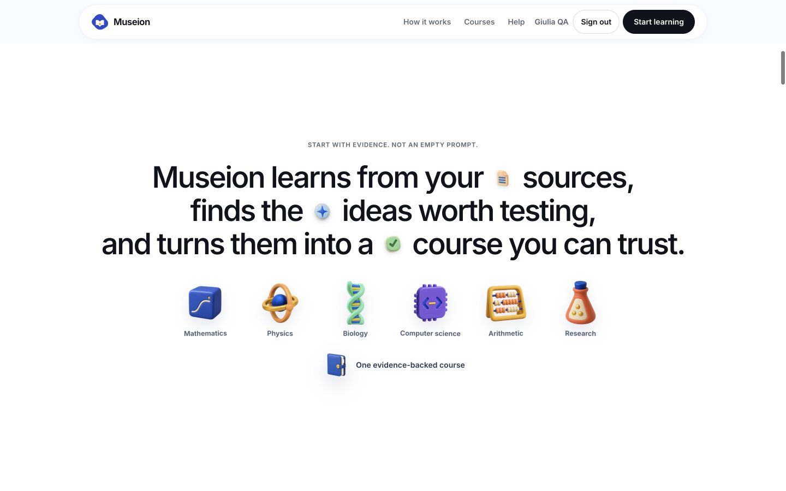
Landing — tablet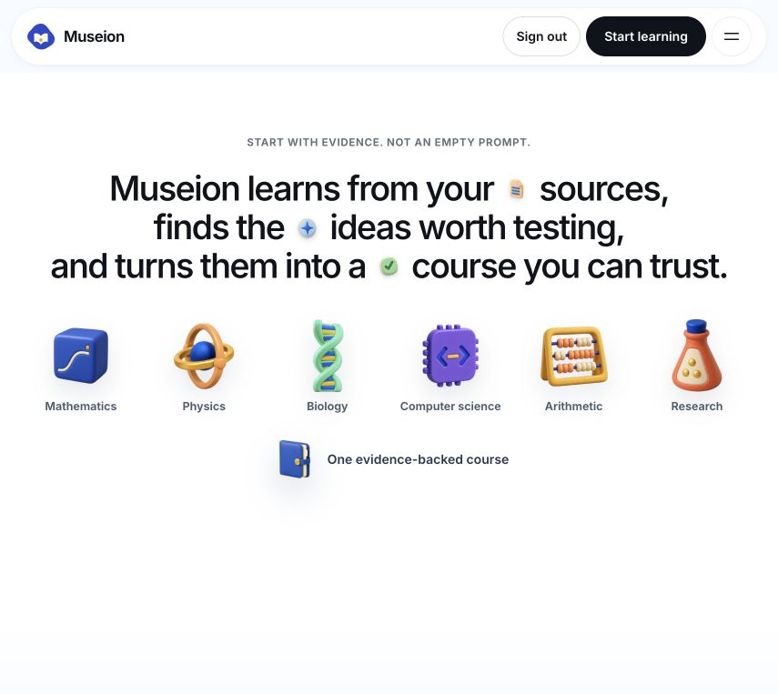
Landing — mobile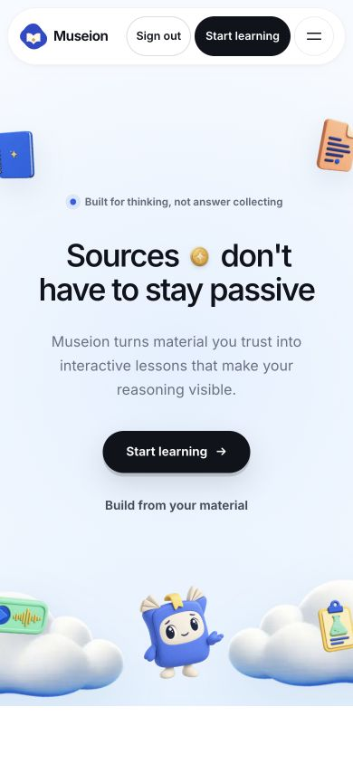
Header con lookup account bloccato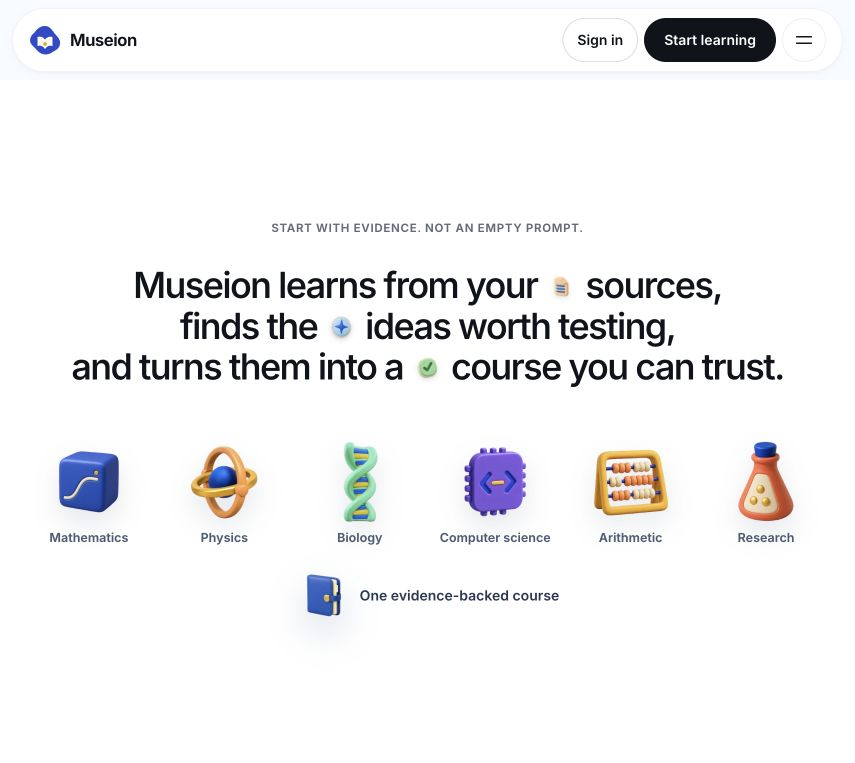
Footer — mobile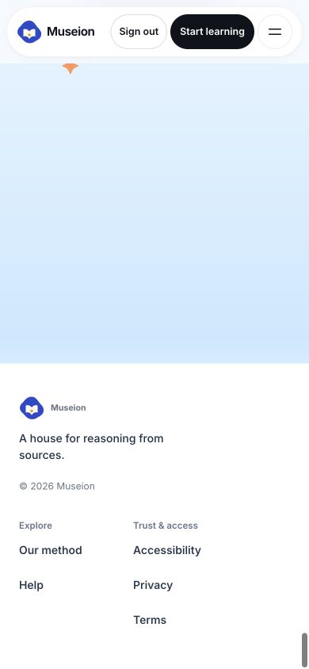
Movimento ridotto — mobileCorso da fonti — percorso QA replay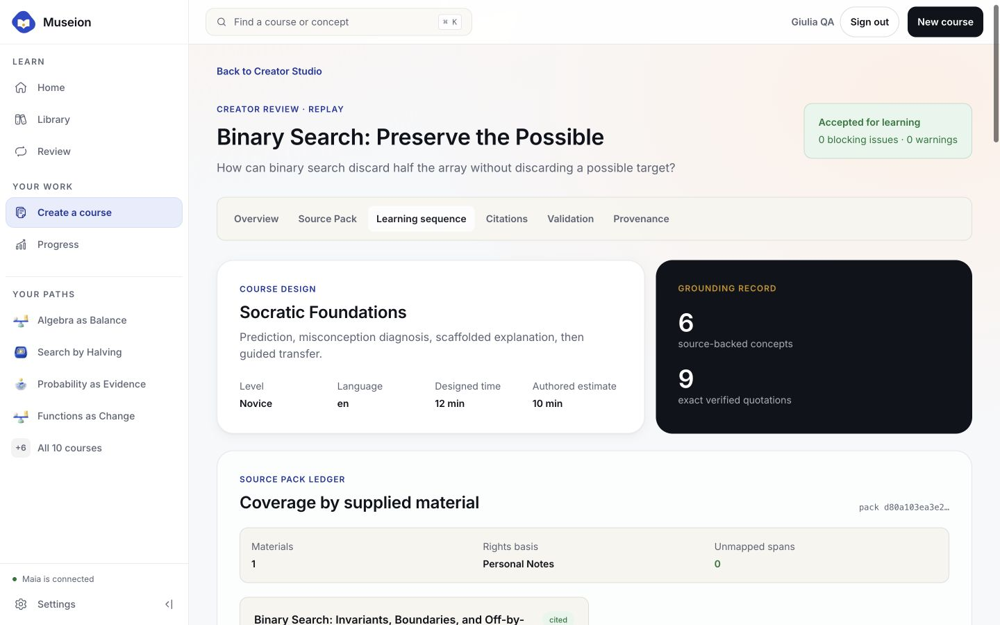
Corso da fonti — attività QA replay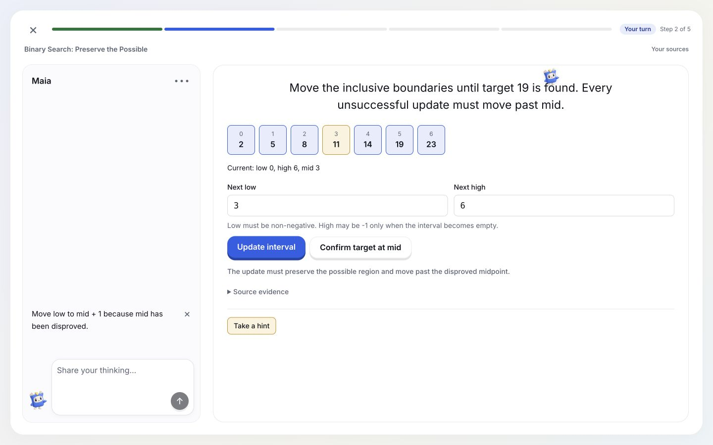
Corso da fonti — prova indipendente QA replay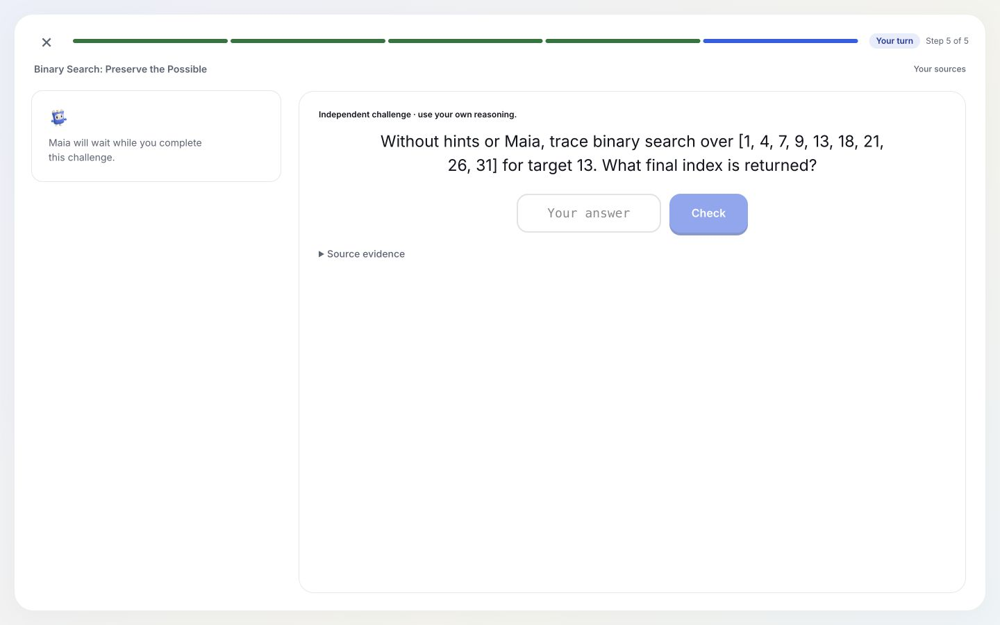
Landing — build locale finale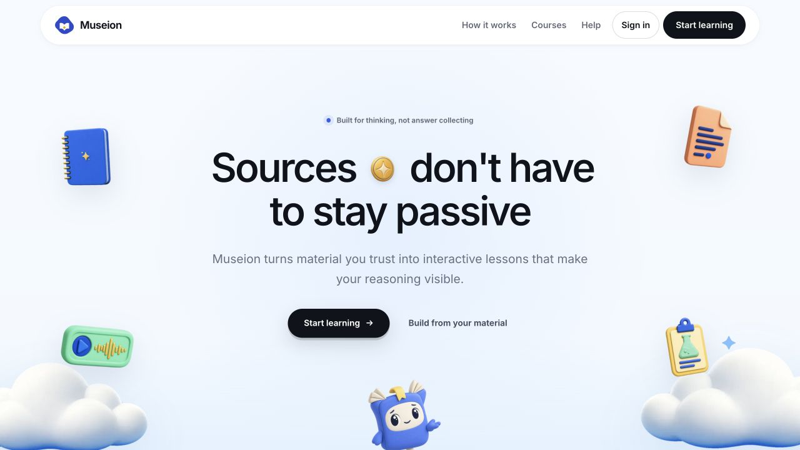
Corso da fonti — mobile QA replay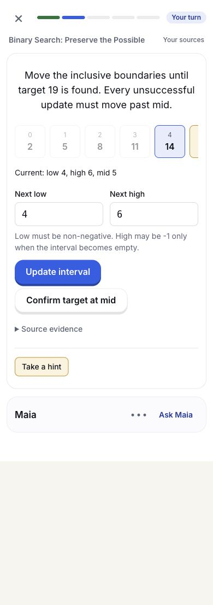
Corso da fonti — percorso completato QA replay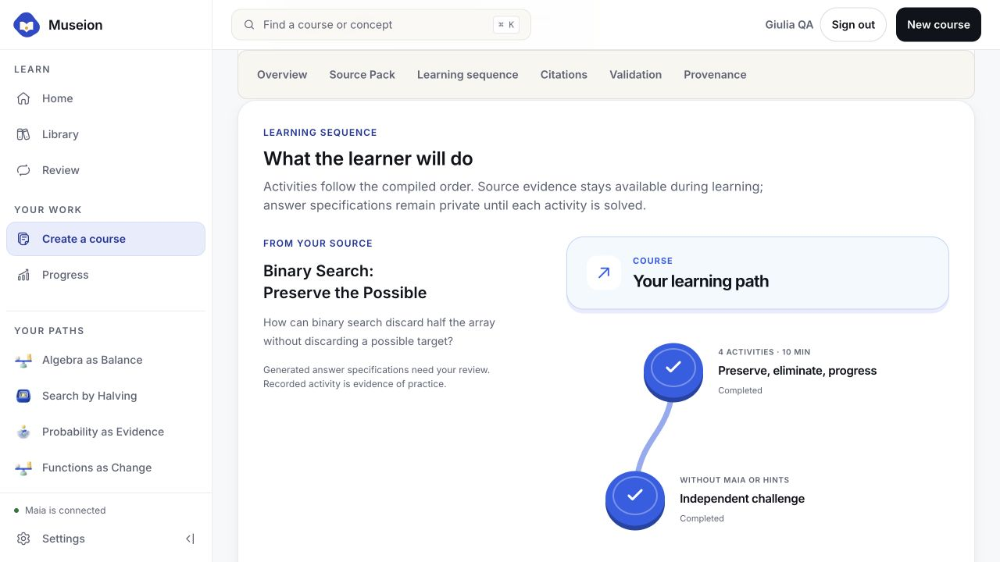
Corso da fonti — risultato persistente QA replay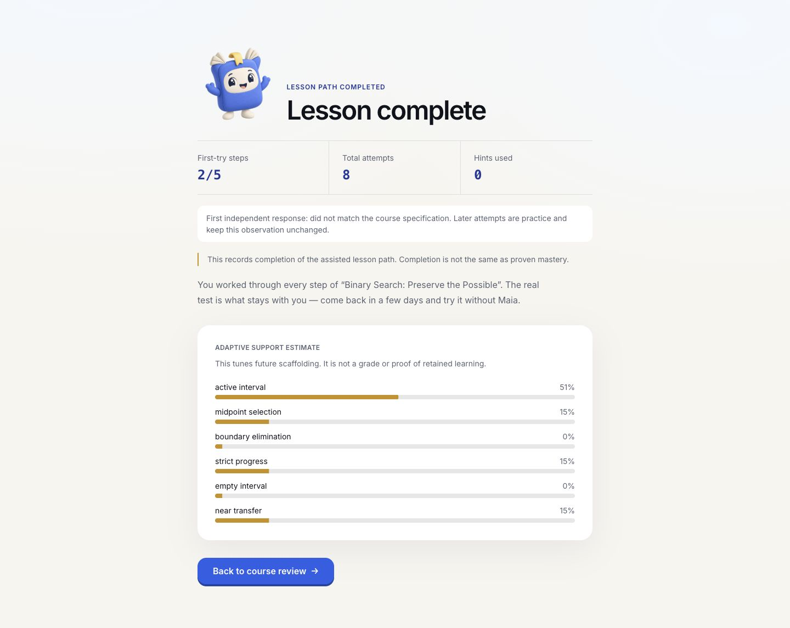